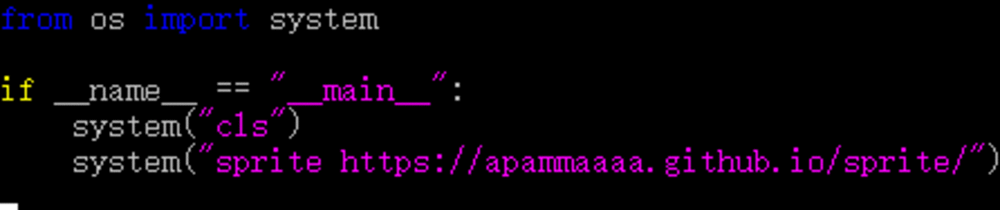

什么是Sprite？
Sprite是免费的 (就像"自由言论"或者"免费啤酒")网页纯文本浏览器。使用纯文本浏览器测试网站是一种测试此网站是否容易浏览的好方法。如果使用纯文本浏览器可以方便地浏览到网站的每个地方，那么用户使用屏幕阅读器也可以做到。
Sprite是用python编写的，基于强大的Requests模块，并使用控制台作为输入输出环境以确保更高的执行效率和更小的程序尺寸，通过在不失去用户友好性的情况下优化更多的例程。Sprite试图减少世界二氧化碳的排放，当使用较少的cpu功率时，pc可以降低速度并降低功耗，从而实现绿色环境。
警告：非专业使用会导致危险的副作用，包括：安全缺陷症、冗余代码症、重新发明轮子症、啃文档症、抑郁、头疼、甚至死亡。
我希望您和我喜欢编写它一样喜欢Sprite。